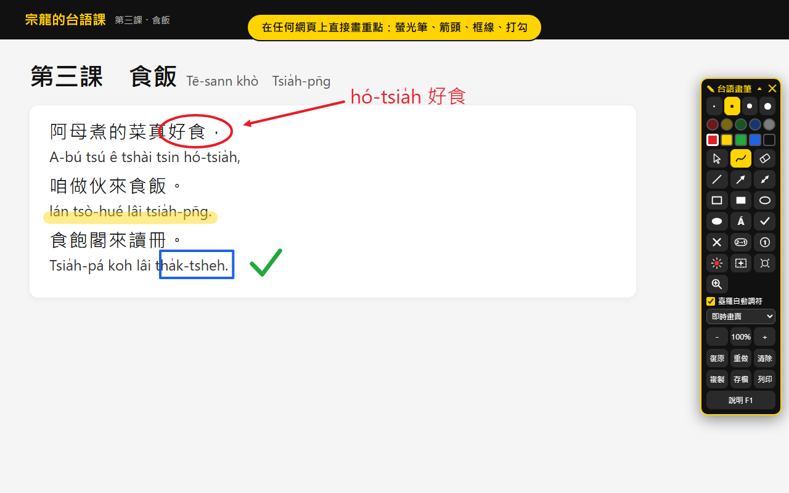
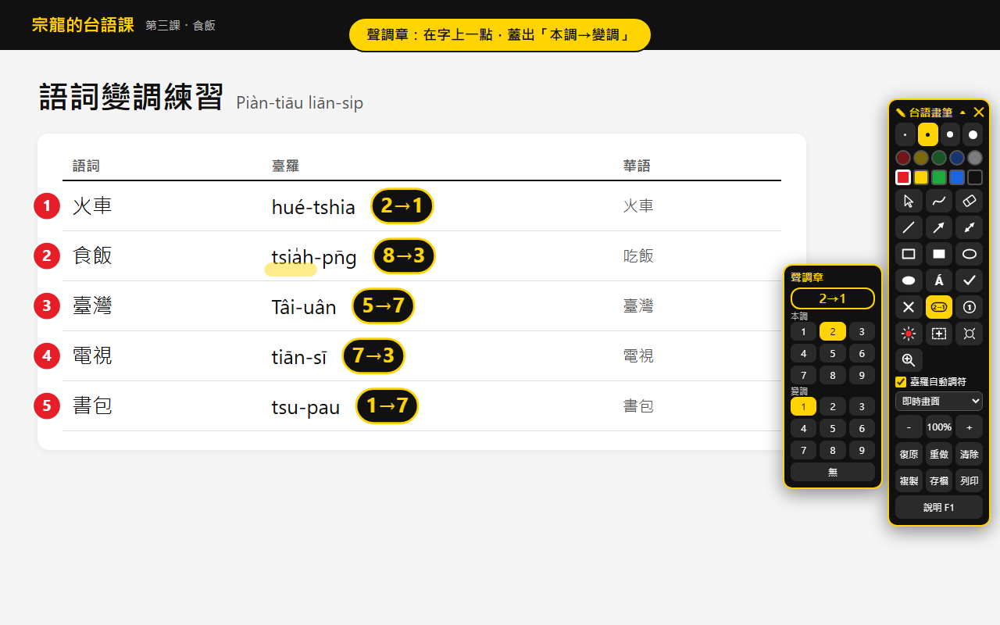
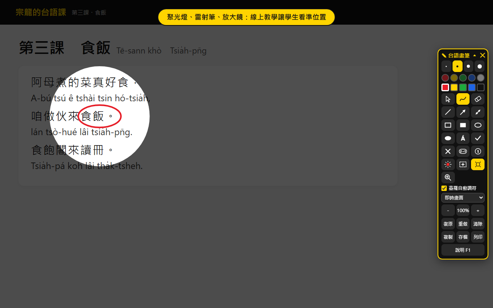

按 Alt+Q，
在任何網頁上
畫台語重點
Google 簡報、雲端硬碟、YouTube、電子課本都能畫。打 tai5-gi2 自動變成 tâi-gí，一點蓋上變調章；再按一次 Alt+Q，網頁完全回到原狀。

三步驟開始上課
畫筆不會常駐在網頁裡：只有您按下 Alt+Q 或點圖示的那個分頁才會載入，平常瀏覽完全不受影響。
加到 Chrome
到 Chrome 線上應用程式商店的「台語螢幕畫筆」頁面，按「加到 Chrome」→「新增擴充功能」。
安裝時不會出現「讀取及變更您在所有網站上的資料」的警告。Edge 也可從 Chrome 商店安裝。
釘選到工具列
點網址列右邊的拼圖圖示，在「台語螢幕畫筆」旁按圖釘，黑黃圖示就會固定在工具列上。
想換快捷鍵：網址列輸入 chrome://extensions/shortcuts。
開始畫
打開要上課的網頁，按 Alt+Q 或點黑黃圖示，畫面右側出現「台語畫筆」工具列，就能直接畫。
畫筆中按 F1 會顯示整張鍵盤說明圖。
臺羅數字調，打完自動變調符
畫筆的文字工具（T）勾選「臺羅自動調符」後，輸入數字調就轉成教育部《臺灣台語羅馬字拼音方案》的調符。在右邊試試看，和擴充功能裡的效果一樣。
為台語課設計的每一支筆
桌面版「台語螢幕畫筆」的功能，Chrome 擴充 v1.2 幾乎全部到齊。

聲調章・編號章
講變調一目了然
- V 聲調章：在字上一點蓋出「2→1」本調→變調，按數字選本調、Shift+數字選變調
- Shift+V 編號章：依序蓋 ①②③，標出朗讀順序
- 工具列一鍵貼上臺羅拼音表：聲母、韻母、聲調、變調總表，調符紅色
- B 白板、Shift+B 四線三格，還有黑板、方格紙背景

聚光燈・雷射筆・放大鏡
線上教學讓學生看準位置
- F2 聚光燈、F3 放大鏡，滾輪調大小與倍率
- A 雷射筆：軌跡自動消失，不留痕跡
- F5 遮幕：滑鼠以下遮住，往下移逐行揭示答案（畫筆開著時 F5 不會重新整理網頁）
- 網頁全螢幕（Google 簡報「簡報模式」）時也能畫
PDF 講義授課 v1.2
在內建「PDF 講義」頁開 PDF（Ctrl+O 或拖進來），空白鍵翻頁、每頁各自畫記；Ctrl+S 存回 PDF，之後還能再修改。
頁面編輯與遮蓋
插入空白頁、四線三格頁或其他 PDF，旋轉、移動、刪除頁面；白色遮蓋方塊挖空答案。
貼上圖片 v1.2
Ctrl+V 貼截圖、把圖檔拖進畫面，或按「貼圖」選多張；拖四角縮放、Delete 刪除。
移動、縮放標記
按住 Ctrl 拖曳任何標記；拖選取框四角縮放，文字與章等比例放大。移動、刪除都能復原。
存檔・複製・列印
Ctrl+S 下載 PNG、Ctrl+C 複製、Ctrl+P 列印；可凍結畫面再畫。
一鍵到「宗龍的台語課」
工具列上的「宗龍的台語課」按鈕，在新分頁開啟課程網站，點讀筆、練習與測驗隨手可開。
右手畫，左手換工具
所有快捷鍵都在鍵盤左半邊。白字＝直接按，灰字＝按住 Shift 再按。
組合鍵
Alt+1～4 粗細
Ctrl+Z 復原（加 Shift 重做）
Ctrl+拖曳 移動標記
滑鼠
滾輪 放大縮小／調放大鏡倍率
右鍵拖曳 移動放大後的畫面
按住 空白鍵 拖曳 抓手
注音輸入法
打臺羅前先按 Shift 切英數；擴充版會等輸入法組字完成才轉調符。
宗龍的台語課
臺中明道中學詹宗龍老師的台語教學網站。依課本課次整理線上練習與測驗：課堂上用台語螢幕畫筆畫重點、標聲調，學生回家也能自己聽、自己練。
前往「宗龍的台語課」 →權限只用在您按下的那一頁
| 權限 | 用途 |
|---|---|
activeTab | 只在您按 Alt+Q 或點圖示的分頁，暫時疊上畫布；凍結、存檔時擷取該分頁畫面 |
scripting | 在該分頁載入套件內附的畫筆程式，不載入任何遠端程式碼 |
storage | 在本機記住顏色、粗細、工具列位置 |
常見問題
在新分頁或 chrome:// 設定頁按 Alt+Q 沒反應？
Chrome 不允許任何擴充功能在新分頁、設定頁、線上應用程式商店與內建 PDF 檢視器上作畫。在這些頁面啟動時，會改開擴充功能內建的「台語白板」頁（新分頁直接變成白板）。
要怎麼在 PDF 講義上畫？
按 Ctrl+O 或從背景選單選「PDF 講義」，在內建的 PDF 講義頁開啟檔案；在 Chrome 內建 PDF 檢視器按 Alt+Q 也會自動轉過去。畫好按 Ctrl+S 存回 PDF，任何閱讀器都看得到。
畫的時候想點網頁、翻投影片？
按 Q 切到「滑鼠穿透」：標記留在畫面上，滑鼠和鍵盤交給網頁；要再畫時按 Alt+Q 回到畫筆。
打臺羅沒有變成調符？
確認工具列「臺羅自動調符」有勾選，並在文字工具（T）中輸入；用注音輸入法時先按 Shift 切英數再打。
想畫在 PowerPoint、Word 等整個 Windows 桌面？
擴充功能只能畫在 Chrome 分頁內。要畫在整個桌面，請改用桌面版「台語螢幕畫筆」，功能與快捷鍵相同。
存檔會存到哪裡？
一般網頁按 Ctrl+S 會下載 PNG 到「下載」資料夾；PDF 講義頁則存回 PDF（第一次會請您允許覆寫原檔或選位置）。